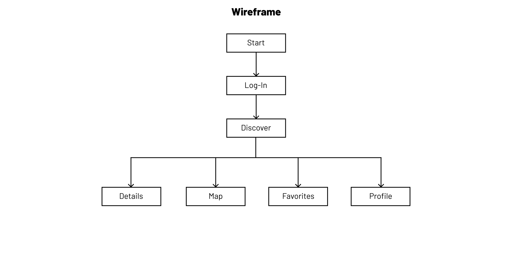
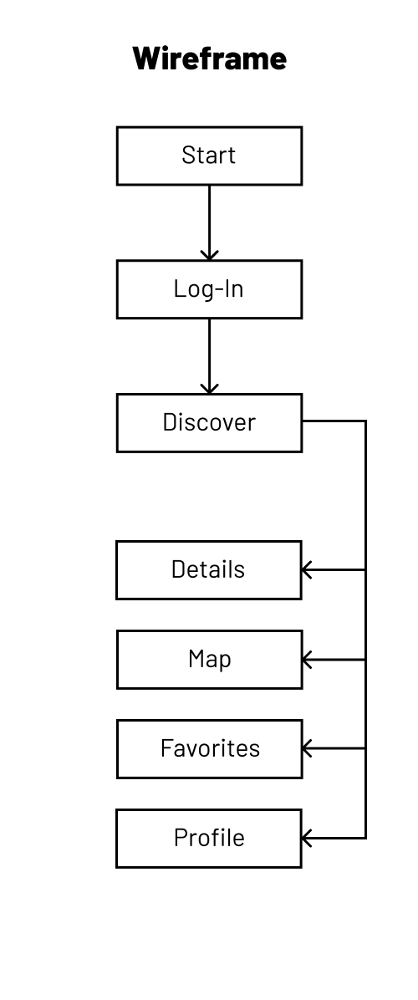

traveltips - UI/UX-Design
This is a conceptual UI/UX-Design of a travel companion app called traveltips. The user is able to find nearby attractions, learn more about them and bookmark their favorite places.
Web Design, Branding
UI/UX Design with 7 Pages



